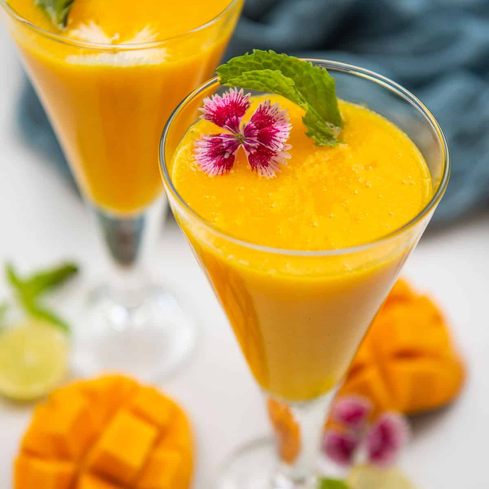

Summertime Mango Drink
One of my favorite drinks of the summer. It's really easy and takes only 5 minutes or less to prepare. My husband cannot get enough of it. If you want to serve 6 to 8 people, just double the ingredients.

Ingredients
- 2 mangoes, cut into cubes
- 1 cup ice cubes
- 1 teaspoon vanilla extract
- 1 tablespoon white sugar
- 1 ⅔ cups milk
Directions
- Combine mangoes, ice cubes, vanilla extract, and sugar in a blender; pour in milk. Blend until liquefied.